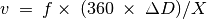

Vitesse du son
Objectif
Calculer la vitesse du son en mesurant les variation de pression selon la distance.
Le son voyage comme une série de compressions et d’expansions. La figure 5.1↓(a) montre les régions de haute et basse pression le long de la direction de propagation, en même temps que la sortie d’un capteur de pression aux positions correspondantes.
On peut faire un graphique des variations de pression à tout point en
synchronisation avec la variation au point de départ. La phase de la
sortie du microphone change quand on modifie sa distance au piézo. Quand
on le déplace d’une longueur d’onde, la phase change de 360°. Si la
phase change de X degrés pour un changement de la distance de  ,
la longueur d’onde est donnée par
,
la longueur d’onde est donnée par  . On
obtient la vitesse du son en multipliant cela par la fréquence.
. On
obtient la vitesse du son en multipliant cela par la fréquence.


|
| Figure 5.1 (a) compressions et expansions le long de la direction de propagation d’un son. (b) schéma de montage |
Procédure
- Régler la fréquence au maximum de résonance en mesurant la réponse en amplitude 5.1↑
- Fixer le piézo face au microphone, le long d’un axe
- Activer la mesure
- Ajuster la distance pour que les deux traces soient en phase
- Modifier la distance pour les déphaser de 180°; cette distance est la demi-longueur d’onde.
Discussion
À 3500Hz, un changement de distance de 2cm provoque un changement de
phase de 176° à 102°. À l’aide de l’équation,
,  .
Il est important de conserver le microphone et le disque piézo sur le
même axe pour des résultats précis.
.
Il est important de conserver le microphone et le disque piézo sur le
même axe pour des résultats précis.